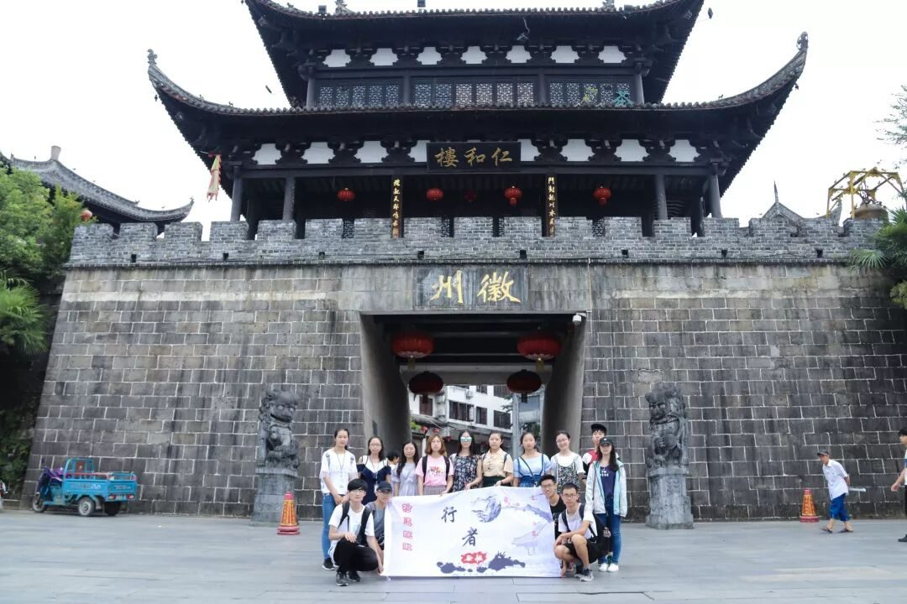
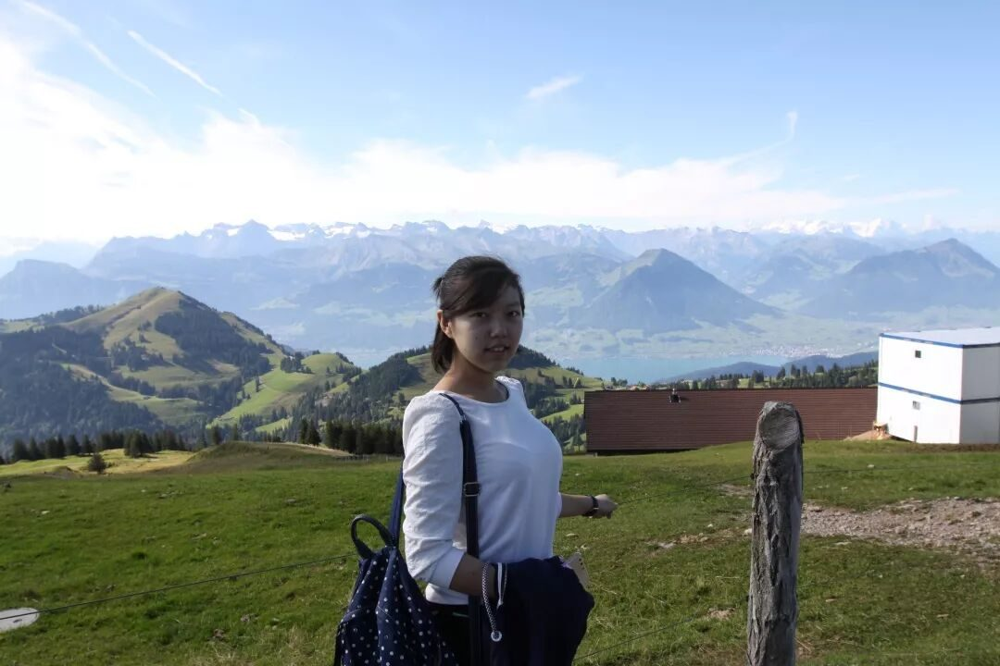
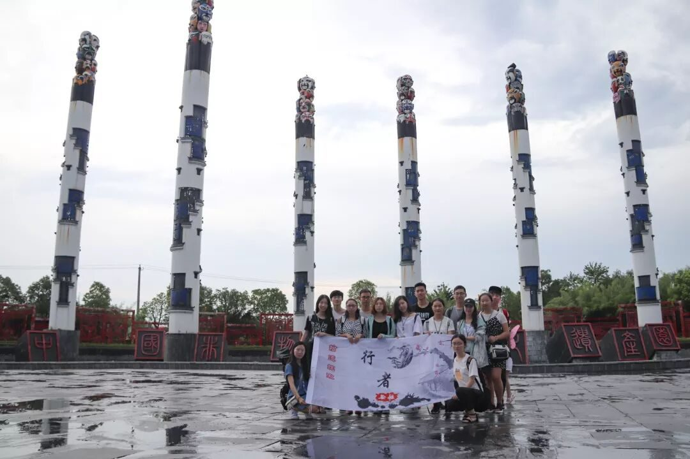
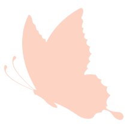

【素笺寄情·一】梦里漫徽途

【素笺寄情·一】
梦里漫徽途
行者之途，似是一滴墨融入如水的回忆，点滴渲染，触动一个夏天。

成长
从致旅吴越到拾遗皖徽，从社会实践小白到担当起老队员的责任，也只有半年。在这半年里，行者无疆像是戴在我身上的勋章，见证我的成长与担当。半年前磨不掉的回忆，如心底最珍贵的心头血，纯粹，美妙。南京苏州，是江南的温润婉约，是粉墙黛瓦，是吴侬软语，是空气里甜腻的桂花香。宣城黄山，是徽州的恢弘安详，是磅礴的马头墙，是笔墨纸砚中的浓郁书香。
初
遇

初遇安徽，在暴雨中探访中国非物质文化遗产园。大雨初歇，满园尽是翡翠如新，嘀嗒的雨声像是徽州建筑传出的亘古回音，幽幽之境笼罩下的非遗文物愈加古朴厚重。雕梁画栋的美妙木雕，细致的窗棂边角，顶棚吊灯，都是古朴而典雅的美。可是在这里，这些美妙的建筑和文物之外，馆内昏暗的灯光，随意丢弃的桌椅，石雕上的灰尘和蛛网，园内工作人员的态度等，都让我们深刻体会到了他们对于当地文化乃至非物质文化遗产的不重视，实在令人叹惋。
安徽博物院内，我们感受到了外地游客对徽州文化的珍视和当地居民的漠然。很幸运，问卷发放过程中遭遇的阻拦迎刃而解，耐心而诚恳的态度与调查问卷的高水准成功获得了博物院工作人员的认可，这是此行受到外界的首次认同，为调研组前期调研问卷的细致编撰骄傲自豪！

辗
转
辗转宣城泾县，坐落于山中的中国宣纸文化园，遗世而独立。青山碧水之间，传承千年古艺，经久不绝，盛誉不衰。108道工序的细致制作，制成“轻似蝉翼白如雪，抖似细绸不闻声”的宣纸。青檀树皮，沙田稻草，清澈山泉，野生藤枝，不可缺一，才可得上品宣纸。在宣纸生产车间，师傅们卖力地捞纸晒纸，让人不忍打扰。也正是如此般二十几年如一日的坚守，这里诞生了两名“大国工匠”，在他们的手臂翻飞之间，无数个春夏秋冬过去，恪守着的每日1000张宣纸的责任，是传承，是担当。我们欣慰于宣纸这种得天独厚的先人创造能被一代代手艺人所传承，让白云深处的故事隽永绵长。
宏
村
绝美宏村
在黄山，我们遇见了绝美宏村，在那个阡陌交通的小村，蓝天碧水，映出了一幅绝美山水画。曲折小巷里，掠过无数游人，嘈杂喧哗中难以静下的心难以体会那里一顷方塘里掩映的风霜沧桑。沿路采访的游人无一不表示，这里的商业化破坏了它本真积淀的灿烂光华，损伤了它原本的宁静平和。在新中艺术砖雕厂中拜访的大国工匠方新中老师，和在老街驻守的杨文先生，用坚守诠释对非遗传承的热爱和赤诚之心。他们的返璞归真，在传承中不忘的创新与发扬，是这个快节奏时代的珍贵所在。“捧着一颗心来，不带半根草去”，愿每位非遗人都能如此匠人般热情专注，愿这些古老技艺在历史的洪流中光彩熠熠，永不褪色。
安徽一路走来，从策划招募，到筹备圆满，圆了心念的梦。听不见闹钟的清晨，忙着策划的夜晚，自我怀疑也在自我实现。行者无疆传播的文化，遇上了从远方赶来的我们，也庆幸，一路奔波流离，那些非遗还在闪着它们独有的光亮。
行者
无疆


长
按
关
注
解锁更多精彩内容
行者无疆·拾遗皖徽
QQ: 2758025831
新浪微博：@行D者L无U疆T